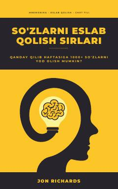

SEChet tili so'zlarini tez va oson yod olish sirlarini o'rganing.
Ushbu qo'llanma chet tili so'zlarini tez va oson yod olish sirlarini ochib beradi. Kitobda mnemonika, LOKI va TOG usullari, shuningdek dangasalikni yengish va intizomni shakllantirish yo'llari haqida so'z boradi.